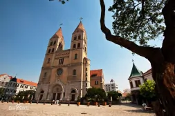
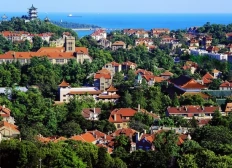

青岛简介
青岛 （山东省辖地级市）
来源：百度百科

青岛，别称岛城、琴岛、胶澳，山东省辖地级市、副省级市、计划单列市、特大城市， 国务院批复确定的中国沿海重要中心城市和滨海度假旅游城市、国际性港口城市 。截至2019年，全市下辖7个区、代管3个县级市，建成区面积758.16平方千米。区域总面积11293平方千米 。根据第七次人口普查数据，截至2020年11月1日零时，青岛市常住人口为10071722人。 2021年，全市实现地区生产总值14136.46亿元。
青岛地处中国华东地区、山东半岛东南、东濒黄海，位于东经119°30′—121°00′、北纬35°35′—37°09′之间。是山东省经济中心、国家重要的现代海洋产业发展先行区、东北亚国际航运枢纽、海上体育运动基地 ， 一带一路新亚欧大陆桥经济走廊主要节点城市和海上合作战略支点。
青岛是国家历史文化名城、中国道教发祥地。因树木繁多，四季常青而得名。1891年清政府驻兵建制， 青岛是2008北京奥运会和第13届残奥会帆船比赛举办城市，是中国帆船之都， 亚洲最佳航海城， 世界啤酒之城、联合国“电影之都”、全国首批沿海开放城市、全国文明城市、中国最具幸福感城市。被誉为“东方瑞士” 、中国品牌之都。2020年9月2日，被交通运输部评为国家公交都市建设示范城市。
青岛是国际海洋科研教育中心，驻有山东大学（青岛）、北京航空航天大学青岛校区、 中国海洋大学等高校26所，引入清华大学、北京大学等29所高校。青岛的异域建筑种类繁多，被称作“万国建筑博览会”。八大关建筑群荣膺“中国最美城区”称号
历史沿革
青岛市市名以古代渔村青岛得名。青岛市专名“青岛”本指城区前海一海湾内的一座小岛，因岛上绿树成荫，终年郁郁葱葱而得名“青岛”，后于明嘉靖年间首度被记载于王士性的《广志绎》中。明万历七年（1579年），即墨县令许铤主持修编的《地方事宜议·海防》中，有关青岛之名记述为：“本县东南滨海，即中国东界，望之了无津涯，惟岛屿罗峙其间。岛之可人居者，曰青、曰福、曰管……”这里的“青”，即指青岛。青岛所在的海湾因岛得名青岛湾，由此入海的一条小河也被称为青岛河。青岛河口于明万历年间建港，称青岛口；河两岸的两个村落分别得名上青岛村和下青岛村；河源头的一座山于1923年也被定名为青岛山。
地质特征
青岛所处大地构造位置为新华夏隆起带次级构造单元——胶南隆起区东北缘和胶莱凹陷区中南部。区内缺失整个古生界地层及部分中生界地层，但白垩系青山组火山岩层发育充分，在青岛市出露十分广泛。岩浆岩以元古代胶南期月季山式片麻状花岗岩及中生代燕山晚期的艾山式花岗闪长岩和崂山式花岗岩为主。市区全部坐落于该类花岗岩之上，建筑地基条件优良。构造以断裂构造为主。自第三纪以来，区内以整体性较稳定的断块隆起为主，上升幅度一般不大。
人口民族
根据第七次人口普查数据，截至2020年11月1日零时，青岛市常住人口为10071722人。 截至2012年底，青岛以汉族为主，另外，有少数民族52个，少数民族人口76696人。
风景名胜
青岛是国家历史文化名城、重点历史风貌保护城市、首批中国优秀旅游城市。国家重点文物保护单位34处。国家级风景名胜区有崂山风景名胜区、青岛海滨风景区。山东省近300处优秀历史建筑中，青岛占131处。青岛历史风貌保护区内有重点名人故居85处，已列入保护目录26处。 国家级自然保护区1处：即墨马山石林。

